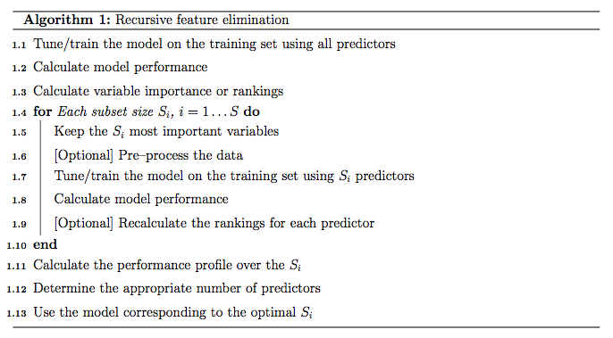
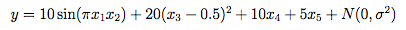
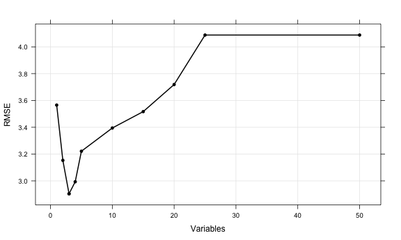
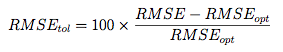
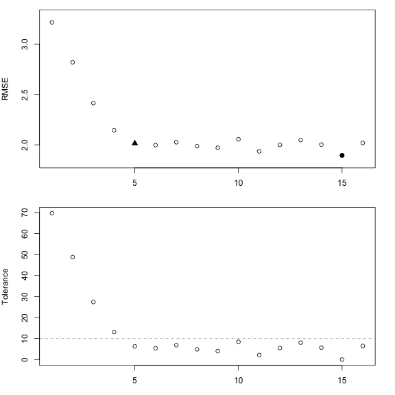
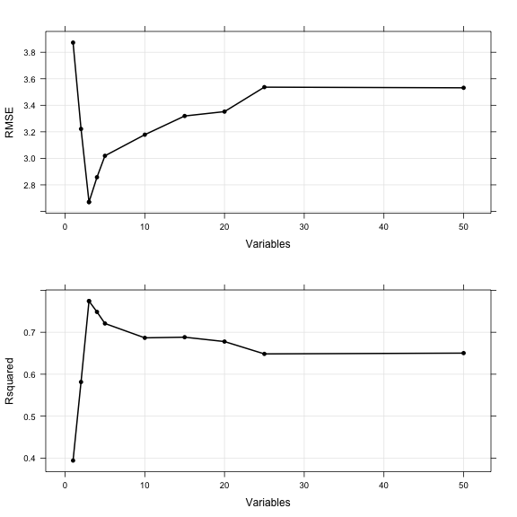
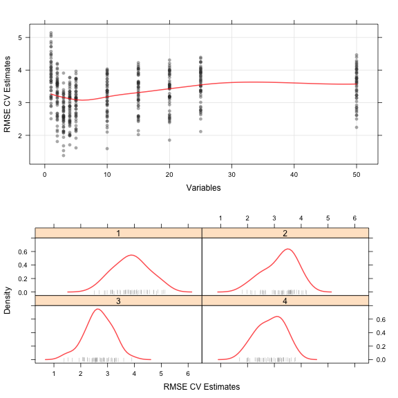
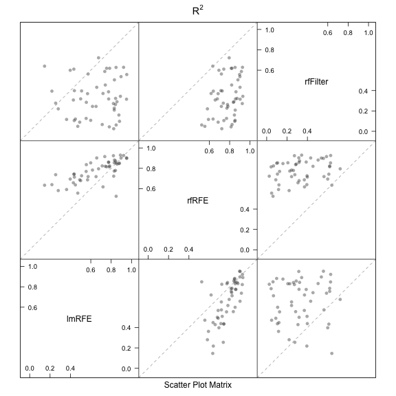

Models with Built-In Feature Selection
Many models that can be accessed using caret's train function produce prediction equations that do not necessarily use all the predictors. These models are thought to have built-in feature selection and include rpart, gbm, ada, glmboost, gamboost, blackboost, ctree, sparseLDA, sddaLDA, sddaQDA glmnet, lasso, lars, spls, earth, fda, bagEarth, bagFDA , pam and others. Many of the functions have an ancillary method called predictors that returns a vector indicating which predictors were used in the final model.
In many cases, using these models with built-in feature selection will be more efficient than algorithms where the search routine for the right predictors is external to the model. Built-in feature selection typically couples the predictor search algorithm with the parameter estimation and are usually optimized with a single objective function (e.g. error rates or likelihood).
Feature Selection Using Search Algorithms
Searching the Feature Space
Many feature selection routines used a "wrapper" approach to find appropriate variables such that an algorithm that searches the feature space repeatedly fits the model with different predictor sets. The best predictor set is determined by some measure of performance (i.e. R2, classification accuracy, etc). Examples of search functions are genetic algorithms, simulated annealing and forward/backward/stepwise selection methods. In theory, each of these search routines could converge to an optimal set of predictors.
An example of one search routine is backwards selection (a.k.a. recursive feature elimination).
Backwards Selection
First, the algorithm fits the model to all predictors. Each predictor is ranked using it's importance to the model. Let S be a sequence of ordered numbers which are candidate values for the number of predictors to retain (S1 > S2, ...). At each iteration of feature selection, the Si top raked predictors are retained, the model is refit and performance is assessed. The value of Si with the best performance is determined and the top Si predictors are used to fit the final model. Algorithm 1 has a more complete definition.
The algorithm has an optional step (line 1.9) where the predictor rankings are recomputed on the model on the reduced feature set. Svetnik et al (2004) showed that, for random forest models, there was a decrease in performance when the rankings were re-computed at every step. However, in other cases when the initial rankings are not good (e.g. linear models with highly collinear predictors), re-calculation can slightly improve performance.

One potential issue over-fitting to the predictor set such that the wrapper procedure could focus on nuances of the training data that are not found in future samples (i.e. over-fitting to predictors and samples).
For example, suppose a very large number of uninformative predictors were collected and one such predictor randomly correlated with the outcome. The RFE algorithm would give a good rank to this variable and the prediction error (on the same data set) would be lowered. It would take a different test/validation to find out that this predictor was uninformative. The was referred to as "selection bias" by Ambroise and McLachlan (2002).
In the current RFE algorithm, the training data is being used for at least three purposes: predictor selection, model fitting and performance evaluation. Unless the number of samples is large, especially in relation to the number of variables, one static training set may not be able to fulfill these needs.
Resampling and External Validation
Since feature selection is part of the model building process, resampling methods (e.g. cross-validation, the bootstrap) should factor in the variability caused by feature selection when calculating performance. For example, the RFE procedure in Algorithm 1 can estimate the model performance on line 1.7, which during the selection process. Ambroise and McLachlan (2002) and Svetnik et al (2004) showed that improper use of resampling to measure performance will result in models that perform poorly on new samples.
To get performance estimates that incorporate the variation due to feature selection, it is suggested that the steps in Algorithm 1 be encapsulated inside an outer layer of resampling (e.g. 10-fold cross-validation). Algorithm 2 shows a version of the algorithm that uses resampling.
While this will provide better estimates of performance, it is more computationally burdensome. For users with access to machines with multiple processors, the first For loop in Algorithm 2 (line 2.1) can be easily parallelized. Another complication to using resampling is that multiple lists of the "best" predictors are generated at each iteration. At first this may seem like a disadvantage, but it does provide a more probabilistic assessment of predictor importance than a ranking based on a single fixed data set. At the end of the algorithm, a consensus ranking can be used to determine the best predictors to retain.

Recursive Feature Elimination via caret
In caret, Algorithm 1 is implemented by the function rfeIter. The resampling-based Algorithm 2 is in the rfe function. Given the potential selection bias issues, this document focuses on rfe. There are several arguments:
-
x, a matrix or data frame of predictor variables -
y, a vector (numeric or factor) of outcomes -
sizes, a integer vector for the specific subset sizes that should be tested (which need not to includencol(x)) -
rfeControl, a list of options that can be used to specify the model and the methods for prediction, ranking etc.
For a specific model, a set of functions must be specified in rfeControl$functions. Sections below has descriptions of these sub-functions. There are a number of pre-defined sets of functions for several models, including: linear regression (in the object lmFuncs), random forests (rfFuncs), naive Bayes (nbFuncs), bagged trees (treebagFuncs) and functions that can be used with caret's train function (caretFuncs). The latter is useful if the model has tuning parameters that must be determined at each iteration.
An Example
To test the algorithm, the "Friedman 1" benchmark (Friedman, 1991) was used. There are five informative variables generated by the equation

In the simulation used here:
Of the 50 predictors, there are 45 pure noise variables: 5 are uniform on [0, 1] and 40 are random univariate standard normals. The predictors are centered and scaled:
The simulation will fit models with subset sizes of 25, 20, 15, 10, 5, 4, 3, 2, 1.
As previously mentioned, to fit linear models, the lmFuncs set of functions can be used. To do this, a control object is created with the rfeControl function. We also specify that repeated 10-fold cross-validation should be used in line 2.1 of Algorithm 2. The number of folds can be changed via the number argument to rfeControl (defaults to 10). The verbose option prevents copious amounts of output from being produced and the returnResamp argument specifies that the 50 performance estimates should be saved only for the optimal subset size.
Recursive feature selection
Outer resampling method: Cross-Validation (10 fold, repeated 5 times)
Resampling performance over subset size:
Variables RMSE Rsquared RMSESD RsquaredSD Selected
1 3.566 0.4894 0.5791 0.2029
2 3.153 0.5953 0.6439 0.1905
3 2.904 0.6562 0.7357 0.2107 *
4 2.993 0.6438 0.7627 0.2066
5 3.221 0.5972 0.8173 0.2094
10 3.394 0.5612 0.8189 0.2144
15 3.517 0.5418 0.9081 0.2337
20 3.719 0.5042 0.9147 0.2365
25 4.088 0.4502 0.9538 0.2302
50 4.088 0.4502 0.9538 0.2302
The top 3 variables (out of 3):
real4, real5, real2
The output shows that the best subset size was estimated to be 3 predictors. This set includes informative variables but did not include them all. The predictors function can be used to get a text string of variable names that were picked in the final model. The lmProfile is a list of class "rfe" that contains an object fit that is the final linear model with the remaining terms. The model can be used to get predictions for future or test samples.
[1] "real4" "real5" "real2"
Call:
lm(formula = y ~ ., data = tmp)
Coefficients:
(Intercept) real4 real5 real2
14.613 2.625 1.967 1.648
Variables RMSE Rsquared Resample
3 3 2.940756 0.5542831 Fold01.Rep1
13 3 2.704529 0.6583788 Fold02.Rep1
23 3 4.599872 0.2181731 Fold03.Rep1
33 3 2.601659 0.8478823 Fold04.Rep1
43 3 1.979220 0.8571701 Fold05.Rep1
53 3 2.978896 0.8301785 Fold06.Rep1
There are also several plot methods to visualize the results. plot(lmProfile) produces the performance profile across different subset sizes, as shown in the figure below.

(click image for larger pdf)
Also the resampling results are stored in the sub-object lmProfile$resample and can be used with several lattice functions. Univariate lattice functions (densityplot, histogram) can be used to plot the resampling distribution while bivariate functions (xyplot, stripplot) can be used to plot the distributions for different subset sizes. In the latter case, the option returnResamp = "all" in rfeControl can be used to save all the resampling results. Example images are shown below for the random forest model.
Helper Functions
To use feature elimination for an arbitrary model, a set of functions
must be passed to rfe for each of the steps in Algorithm
2.
This section defines those functions and uses the
existing random forest functions as an illustrative
example. caret contains a list called rfFuncs, but
this document will use a more simple version that will be better for
illustrating the ideas. The functions used here are collected
in a list called rfRFE.
The summary Function
The summary function takes the observed and predicted values
and computes one or more performance metrics (see line
2.14). The input is a data frame with columns obs
and pred. The output should be a named vector of numeric
variables. Note that the metric argument of the rfe
function should reference one of the names of the output of
summary. The example function is:
function (data, lev = NULL, model = NULL)
{ if (is.character(data$obs))
data$obs <- factor(data$obs, levels = lev)
postResample(data[, "pred"], data[, "obs"])
}
Two functions in caret that can be used as the summary
funciton are defaultSummary and twoClassSummary (for
classification probelms with two classes).
The fit Function
This function builds the model based on the current data set (lines 2.3, 2.9 and 2.17). The arguments for the function must be:
-
x: the current training set of predictor data with the appropriate subset of variables -
y: the current outcome data (either a numeric or factor vector) -
first: a single logical value for whether the current predictor set has all possible variables (e.g. line 2.3) -
last: similar tofirst, butTRUEwhen the last model is fit with the final subset size and predictors. (line 2.17) -
...: optional arguments to pass to the fit function in the call torfe
The function should return a model object that can be used to generate predictions. For random forest, the fit function is simple:
function(x, y, first, last, ...)
{ library(randomForest)
randomForest(x, y, importance = first, ...)
}
For feature selection without re-ranking at each iteration, the random forest variable importances only need to be computed on the first iterations when all of the predictors are in the model. This can be accomplished using importance = first.
The pred Function
This function returns a vector of predictions (numeric or factors) from the current model (lines 2.4 and 2.10). The input arguments must be
-
object: the model generated by thefitfunction -
x: the current set of predictor set for the held-back samples
For random forests, the function is a simple wrapper for the predict function:
function(object, x)
{ predict(object, x)
}
For classification, it is probably a good idea to ensure that the resulting factor variables of predictions has the same levels as the input data.
The rank Function
This function is used to return the predictors in the order of the most important to the least important (lines 2.5 and 2.11). Inputs are:
-
object: the model generated by thefitfunction -
x: the current set of predictor set for the training samples -
y: the current training outcomes
The function should return a data frame with a column called var that has the current variable names. The first row should be the most important predictor etc. Other columns can be included in the output and will be returned in the final rfe object.
For random forests, the function below uses caret's varImp function to extract the random forest importances and orders them. For classification, randomForest will produce a column of importances for each class. In this case, the default ranking function orders the predictors by the averages importance across the classes.
function(object, x, y)
{ vimp <- varImp(object)
if(is.factor(y))
{ if(all(levels(y) %in% colnames(vimp)))
{ avImp <- apply(vimp[, levels(y), drop = TRUE],
1,
mean)
vimp$Overall <- avImp
}
}
vimp <- vimp[
order(
vimp$Overall,
decreasing = TRUE)
,,
drop = FALSE]
vimp$var <- rownames(vimp)
vimp
}
The selectSize Function
This function determines the optimal number of predictors based on the resampling output (line 2.15). Inputs for the function are:
-
x: a matrix with columns for the performance metrics and the number of variables, calledVariables -
metric: a character string of the performance measure to optimize (e.g. RMSE, Accuracy) -
maximize: a single logical for whether the metric should be maximized
This function should return an integer corresponding to the optimal subset size.
caret comes with two examples functions for this purpose: pickSizeBest and pickSizeTolerance. The former simply selects the subset size that has the best value. The latter takes into account the whole profile and tries to pick a subset size that is small without sacrificing too much performance. For example, suppose we have computed the RMSE over a series of variables sizes:
These are depicted in the figure below. The solid circle identifies the subset size with the absolute smallest RMSE. However, there are many smaller subsets that produce approximately the same performance but with fewer predictors. In this case, we might be able to accept a slightly larger error for less predictors.
The pickSizeTolerance determines the absolute best value then the percent difference of the other points to this value. In the case of RMSE, this would be

where RMSE{opt} is the absolute best error rate. These "tolerance" values are plotted in the bottom panel. The solid triangle is the smallest subset size that is within 10% of the optimal value.
This approach can produce good results for many of the tree based models, such as random forest, where there is a plateau of good performance for larger subset sizes. For trees, this is usually because unimportant variables are infrequently used in splits and do not significantly affect performance.

(click image for larger pdf)
The selectVar Function
After the optimal subset size is determined, this function will be used to calculate the best rankings for each variable across all the resampling iterations (line 2.16). Inputs for the function are:
-
y: a list of variables importance for each resampling iteration and each subset size (generated by the user-defined -
size: the integer returned by theselectSizefunction
rank function). In the example, each each of the cross-validation groups the output of the rank function is saved for each of the 10 subset sizes (including the original subset). If the rankings are not recomputed at each iteration, the values will be the same within each cross-validation iteration.
This function should return a character string of predictor names (of length size) in the order of most important to least important
For random forests, only the first importance calculation (line 2.5) is used since these are the rankings on the full set of predictors. These importances are averaged and the top predictors are returned.
function (y, size)
{ finalImp <- ddply(y[, c("Overall", "var")], .(var), function(x) mean(x$Overall, na.rm = TRUE))
names(finalImp)[2] <- "Overall"
finalImp <- finalImp[order(finalImp$Overall, decreasing = TRUE),
]
as.character(finalImp$var[1:size])
}
Note that if the predictor rankings are recomputed at each iteration (line 2.11) the user will need to write their own selection function to use the other ranks.
The Example
For random forest, we fit the same series of model sizes as the linear model. The option to save all the resampling results across subset sizes was changed for this model and are used to show the lattice plot function capabilities in the figures below.
Recursive feature selection
Outer resampling method: Cross-Validation (10 fold, repeated 5 times)
Resampling performance over subset size:
Variables RMSE Rsquared RMSESD RsquaredSD Selected
1 3.873 0.3941 0.6441 0.2181
2 3.222 0.5814 0.5966 0.1986
3 2.670 0.7743 0.5159 0.1070 *
4 2.857 0.7485 0.5170 0.1299
5 3.019 0.7209 0.5460 0.1332
10 3.178 0.6867 0.5661 0.1715
15 3.319 0.6882 0.5734 0.1704
20 3.352 0.6778 0.5769 0.1734
25 3.537 0.6484 0.5427 0.1913
50 3.532 0.6503 0.5478 0.1901
The top 3 variables (out of 3):
real4, real5, real2
The resampling profile can be visualized along with plots of the individual resampling results:

(click image for larger pdf)

(click image for larger pdf)
Feature Selection Using Univariate Filters
Another approach to feature selection is to pre-screen the predictors using simple univariate statistical methods then only use those that pass some criterion in the subsequent model steps. Similar to recursive selection, cross-validation of the subsequent models will be biased as the remaining predictors have already been evaluate on the data set. Proper performance estimates via resampling should include the feature selection step.
As an example, it has been suggested for classification models, that predictors can be filtered by conducting some sort of k-sample test (where k is the number of classes) to see if the mean of the predictor is different between the classes. Wilcoxon tests, t-tests and ANOVA models are sometimes used. Predictors that have statistically significant differences between the classes are then used for modeling.
The caret function sbf (for selection by filter) can be used
to cross-validate such feature selection schemes. Similar to
rfe, functions can be passed into sbf for the
computational components: univariate filtering, model fitting, prediction and performance summaries (details are given below).
The function is applied to the entire training set and also to different resampled versions of the data set. From this, generalizable estimates of performance can be computed that properly take into account the feature selection step. Also, the results of the predictor filters can be tracked over resamples to understand the uncertainty in the filtering.
Basic Syntax
Similar to the rfe function, the syntax for sbf is:
In this case, the details are specificed using the sbfControl
function. Here, the argument functions dictates what the
different components should do. This argument should have elements
called filter, fit, pred and summary.
The score Function
This function takes as inputs the predictors and the outcome in
objects called x and y, respectively. The output
should be a named vector of scores where the names correspond to the
column names of x.
There are two built-in functions called anovaScores and
gamScores. anovaScores treats the outcome as the
independent variable and the predictor as the outcome. In this way,
the null hypothesis is that the mean predictor values are equal across
the different classes. For regression, gamScores fits a smoothing spline in
the predictor to the outcome using a generalized additive model and tests to see if there is any
functional relationship between the two. In each function the
p-value is used as the score.
The filter Function
This function takes as inputs the scores coming out of the
score function (in an argument called score). The
function also has the training set data as inputs (arguments are called x and y).
The output
should be a named logical vector where the names correspond to the
column names of x. Columns with values of TRUE will
be used in the subsequent model.
The fit Function
The component is very similar to the function described in Section
\ref{S:fit}. For sbf, there are no first or
last arguments. The function should have arguments
x, y and .... The data within x
have been filtered using the filter function described
above. The output of the fit function should be a fitted model.
With some data sets, no predictors will survive the filter. In these cases, a model with predictors cannot be computed, but the lack of viable predictors should not be ignored in the final results. To account for this issue, caret contains a model function called nullModel that fits a simple model that is independent of any of the predictors. For problems where the outcome is numeric, the function predicts every sample using the simple mean of the training set outcomes. For classification, the model predicts all samples using the most prevalent class in the training data.
This function can be used in the fit component function to
``error-trap" cases where no predictors are selected. For example,
there are several built-in functions for some models. The object
rfSBF is a set of functions that may be useful for fitting
random forest models with filtering. The fit function here
uses nullModel to check for cases with no predictors:
function (x, y, ...)
{ if (ncol(x) > 0) { library(randomForest)
randomForest(x, y, ...)
}
else nullModel(y = y)
}
The summary and pred Functions
The summary function is used to calculate model performance on held-out samples. The pred function is used to predict new samples using the current
predictor set. The arguments and outputs for these two functions are identical to the previously discussed summary and pred functions in previously described sections.
The Example
Returning to the example from (Friedman, 1991), we can fit another random forest model with the predictors pre-filtered using the generalized additive model approach described previously.
Selection By Filter
Outer resampling method: Cross-Validation (10 fold, repeated 5 times)
Resampling performance:
RMSE Rsquared RMSESD RsquaredSD
4.089 0.3329 0.7121 0.1953
Using the training set, 7 variables were selected:
real1, real2, real3, bogus16, bogus18...
During resampling, the top 5 selected variables (out of a possible 20):
bogus37 (100%), real1 (100%), real3 (100%), real2 (90%), bogus43 (54%)
On average, 6.5 variables were selected (min = 3, max = 9)
In this case, the training set indicated that 7 should be used in the random forest model, but the resampling results indicate that there is some variation in this number. Some of the informative predictors are used, but a few others are erroneous retained.
Similar to rfe, there are methods for predictors,
densityplot, histogram and varImp.
Visualizing Resampling Results
The resamples
class can be used to compare the resampling results of objects
resulting from either train(), rfe() or sbf().
First, the resample results are collected together:
After this, there are several Lattice plot methods: xyplot,
dotplot, densityplot, bwplot,
splom and parallel. Figure \ref{F:resamps1} show a
parallel coordinate of the bootstrapped R2 values.
The diff function can be applied to these objects to produce
confidence intervals and hypothesis testing on the differences:
Call:
summary.diff.resamples(object = differences)
p-value adjustment: bonferroni
Upper diagonal: estimates of the difference
Lower diagonal: p-value for H0: difference = 0
RMSE
lmRFE rfRFE rfFilter
lmRFE 0.2333 -1.1853
rfRFE 0.03697 -1.4186
rfFilter 9.629e-11 < 2.2e-16
Rsquared
lmRFE rfRFE rfFilter
lmRFE -0.1181 0.3233
rfRFE 8.171e-06 0.4415
rfFilter 3.900e-10 < 2.2e-16
There are several plot methods for the differences:
dotplot, densityplot, bwplot and
levelplot. For example, a scatterplot matrix of the bootstrapped R2 values
from the random forests model with univariate filters and the RFE models using linear least squares and random forests is created using:

(click image for larger pdf)